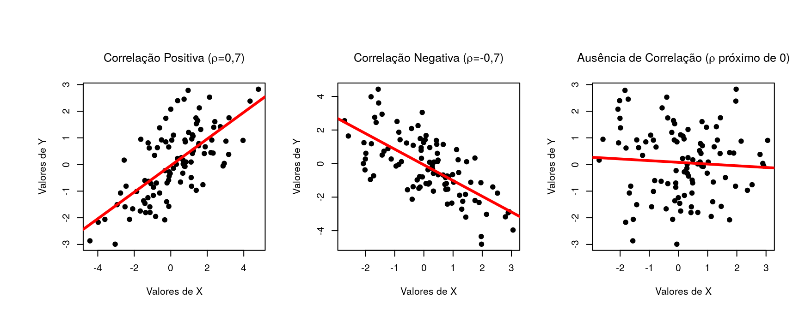
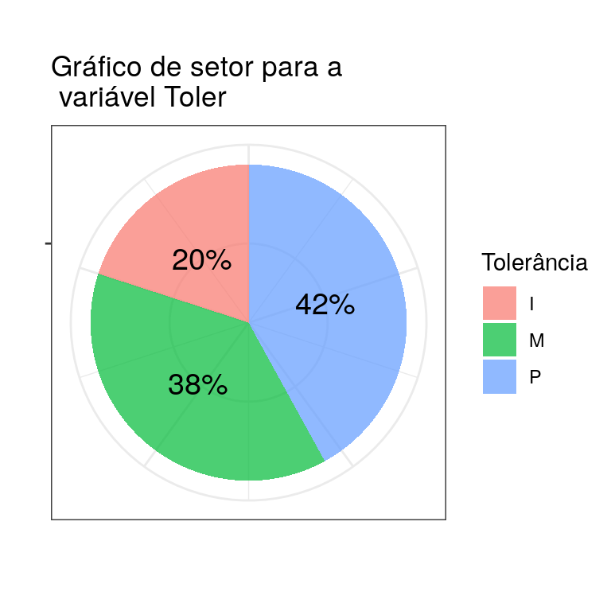
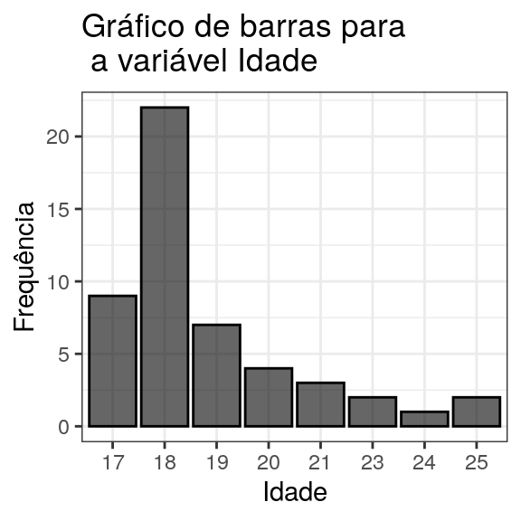
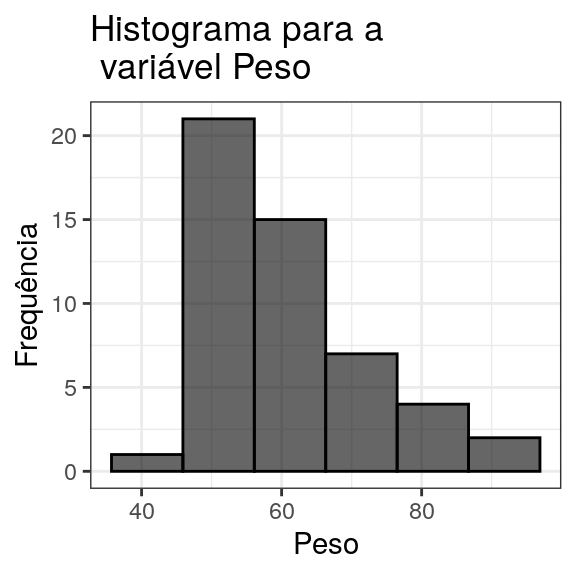
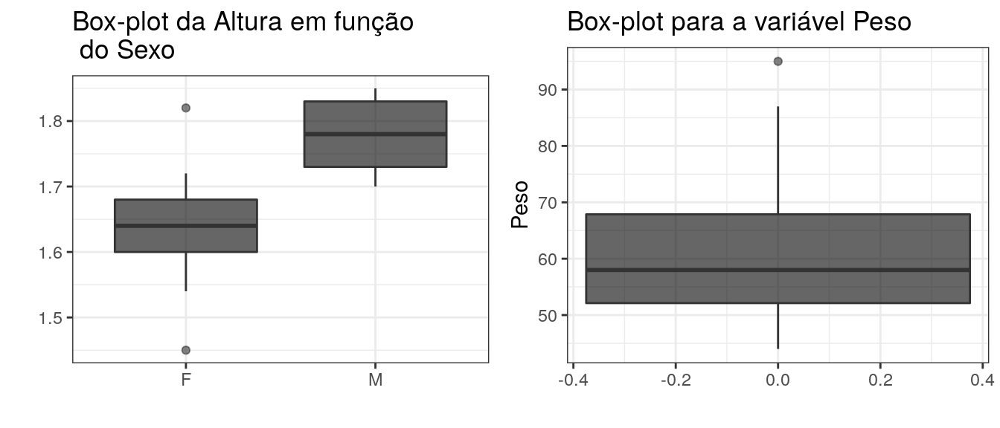
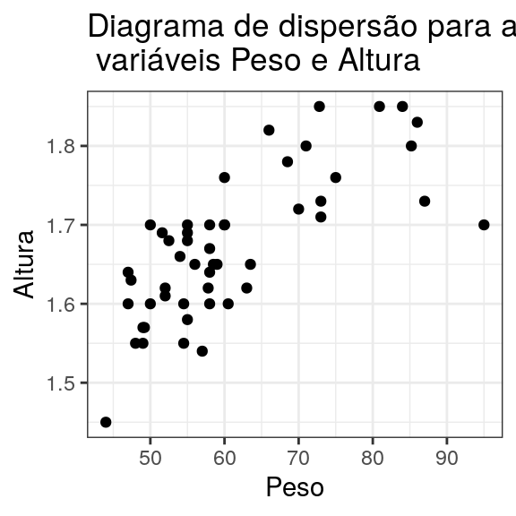
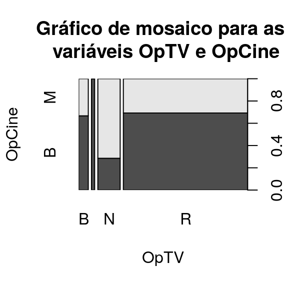
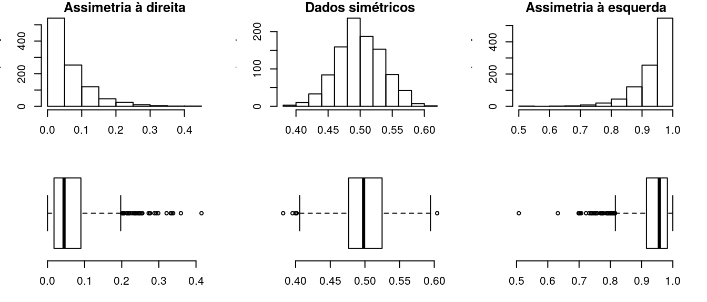

Dando continuidade ao material a respeito de análise exploratória de dados, nesta parte serão apresentadas as medidas de associação, gráficos e ainda uma breve apresentação do conceito de assimetria.
O objetivo das medidas de associação é mensurar quanto uma variável influencia outra. Duas medidas de associação destacam-se: o \(Q^2\) e a correlação.
O coeficiente \(Q^2\) baseia-se na comparação de tabelas de frequência. O que é feito é confrontar os valores reais nas caselas da tabela de frequência de dupla entrada original com as frequências esperadas. O coeficiente é dado por:
\[Q^2 = \sum_{i,j} \frac{(o_{ij}-e_{ij})^2}{e_{ij}}\]
\(o_{ij}\) e \(e_{ij}\) representam as frequências observadas e esperadas na linha \(i\) e coluna \(j\). A diferença entre observado e esperado ao quadrado evita o cancelamento de termos positivos com negativos enquanto que a divisão pelo valor esperado padroniza a medida.
Se as frequências esperadas forem muito próximas das observadas, espera-se que o coeficiente fique próximo de zero. Valores diferentes de 0 indicam associação, isto é, dependência entre as variáveis.
O procedimento para cálculo do \(Q^2\) é:
Considere o exemplo a seguir com duas variáveis \(T\) e \(A\) quaisquer:
\(\\\)
\(\\\)
\(\\\)
\(\\\)
\[Q^2 = \frac{(5-2.81)^2}{2.81}+...+\frac{(4-1.7)^2}{1.7} = 12.63\]
Como o valor não está próximo de 0, conclui-se que há associação entre as variáveis.
Considere um conjunto de dados com \(n\) pares de valores para as variáveis \(X\) e \(Y\), representados por (\(x_i, y_i\)), \(i=1,2,...,n\). O coeficiente de correlação mede a dependência linear entre as variáveis e é calculado da seguinte forma:
\[\rho_{X,Y} = \frac{\sum_{i=1}^{n} (x_i-\bar{x})(y_i-\bar{y})}{\sqrt{[\sum_{j=1}^{n} (x_j-\bar{x})^2][\sum_{j=1}^{n} (y_j-\bar{y})^2]}}\]
ou ainda:
\[\rho_{X,Y} = \frac{\sum_{i=1}^{n}x_{i}y_{i}-n\bar{x}\bar{y}}{\sqrt{[\sum_{j=1}^{n}x_{j}^{2}-n\bar{x}^{2}] [\sum_{j=1}^{n}y_{j}^{2}-n\bar{y}^{2}]}}\]
A correlação varia de -1 até 1 em que valores acima de 0 indicam correlação positiva (a medida que uma variável aumenta a outra também aumenta), valores abaixo de 0 indicam correlação negativa (a medida que uma variável aumenta a outra diminui) e valores próximos de 0 indicam ausência de correlação.

A organização dos dados em tabelas de frequência proporciona um meio eficaz de estudo do comportamento das características de interesse, contudo a informação pode ser melhor representada por meio de gráficos.
Visualização de dados é um assunto interessante pois não requer elevada proficiência em tópicos avançados de Estatística para aplicação e interpretação dos resultados, fazendo com que se caracterize como uma técnica simples, com grande apelo visual e extremamente informativa quanto ao conjunto de dados.
Cuidados devem ser tomados no que diz respeito à escolha do tipo de gráfico para representar a variável com o intuito de evitar que o gráfico fique desproporcional ou privilegiando determinados valores a fim de induzir conclusões àqueles que utilizam o gráfico como forma de visualização.
O uso e divulgação ética e criteriosa de dados devem ser pré-requisitos indispensáveis e inegociáveis
A escolha do gráfico está diretamente ligada ao tipo das variáveis. Além disso, existem gráficos que permitem análises de mais de uma variável simultâneamente a fim de verificar como uma influencia a outra(s). Algumas possibilidades de gráficos para cada tipo de variável são:
Qualitativa nominal ou ordinal: setores, barras.
Quantitativa discreta: barras, histograma, boxplot.
Quantitativas contínuas: histograma ou boxplot.
Consiste em repartir um círculo em setores de tamanhos proporcionais às frequências relativas ou às porcentagens de cada valor.

Utiliza os possíveis valores das variáveis no eixo das abcissas (x) e as frequências ou porcentagens no eixo das ordenadas (y). Para cada valor da variável desenha-se uma barra correspondente à frequência.

Consiste em retângulos contíguos de base dada pelas faixas de valores da variável e área igual à frequência da rescpectiva faixa. A altura de cada retângulo é denominada densidade de frequência ou simplesmente densidade e é dada pelo quociente da área pela amplitude da faixa.

O Box-plot faz uso dos quartis para obtenção de um gráfico no qual é possível analisar a distribuição dos dados, isto é, aspectos quanto a posição, variabilidade, assimetria e também a presença de valores atípicos.
A construção de um box-plot inicia-se com um retângulo em que a aresta inferior coincide com o primeiro quartil e a superior com o terceiro quartil. A mediana é representada por um traço entre as duas arestas.
De \(Q_1\) até \(Q_3\) estão 50% das observações centrais, o que dá uma ideia a respeito de quão dispersos são os valores. A amplitude deste intervalo, \(IQ=Q_3-Q_1\) é chamada amplitude interquartil. Para obtenção da amplitude do box-plot além do retângulo faz-se \([Q_1-1,5IQ ; Q_3+1,5IQ]\), desenha-se então uma linha até estes valores. Valores além destes extremos são marcados como um ponto ou asterisco e são os candidatos a valores atípicos.

Para confecção do diagrama de dispersão uma variável é colocada no eixo x, outra no eixo y e então os pares ordenados são representados por pontos no plano cartesiano

Os gráficos de mosaico são usados para mostrar a relação entre duas variáveis qualitativas. Consiste em uma grade em que cada retângulo representa o número de casos que corresponde a um cruzamento específico de níveis das variáveis em questão. Quanto mais níveis das variáveis, maior será o número de retângulos.

Uma característica interessante de um conjunto de dados é a existência ou não de simetria. Um conjunto pode ser aproximadamente simétrico, assimétrico à esquerda ou à direita. Tais características são facilmente diagnosticadas através de análise gráfica, fazendo uso de histogramas e box-plots; porém há também a possibilidade de diagnóstico via análise das medidas de posição e através de coeficientes de assimetria conhecidos.
